Añadir amigo
Campo de código amplio y botón ajustado al contenido.
Abrir a resolución completa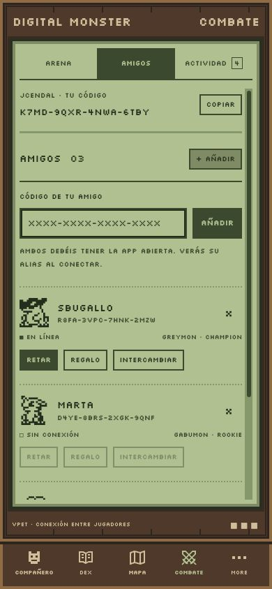
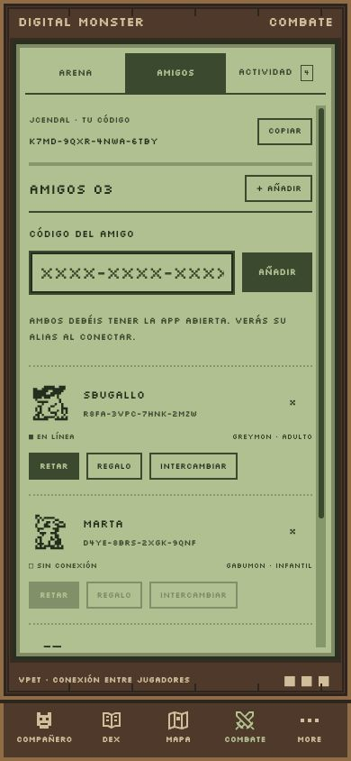
Enviar un regalo
Identidad, imagen, explicación enmarcada y acciones verticales.
Abrir a resolución completa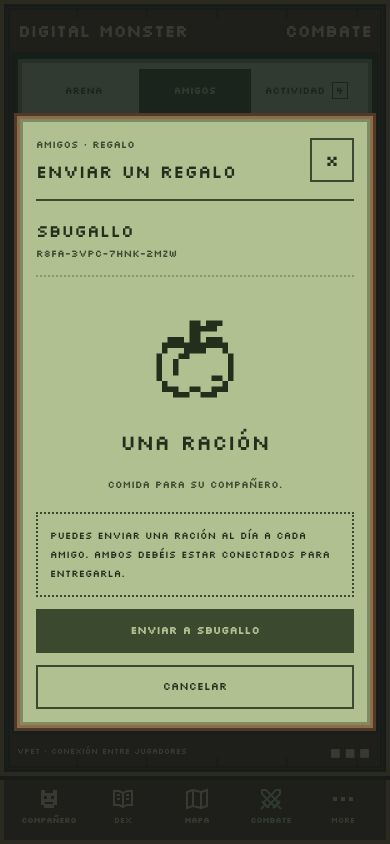
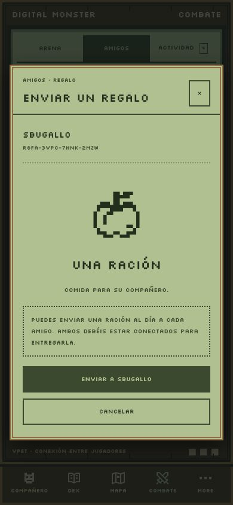
Enviar reto
Botones centrados y acciones verticales.
Abrir a resolución completa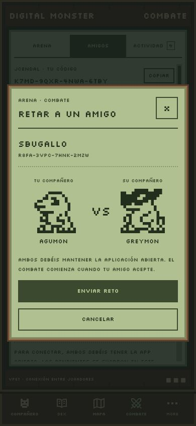
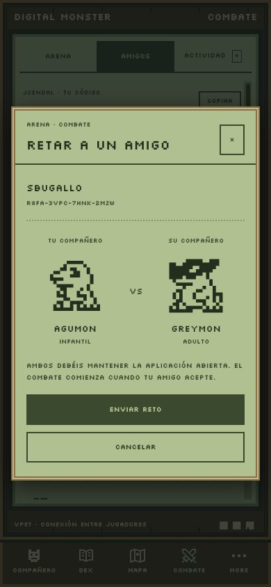
Elegir un Digimon
Se recuperan los títulos y la jerarquía del diseño. La captura muestra la selección inicial de Agumon.
Abrir a resolución completa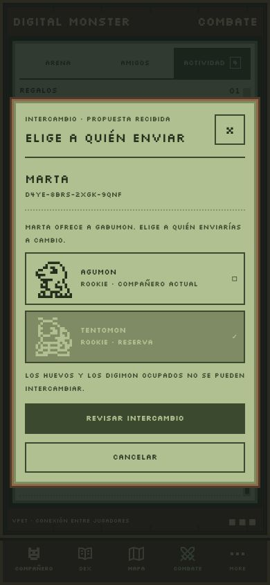
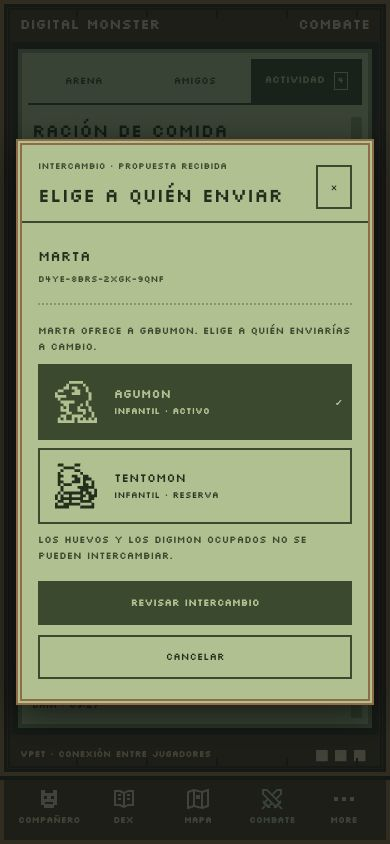
Revisar intercambio
Historial enmarcado, confirmaciones explícitas y espera de conexión. La terminología de etapa procede del catálogo traducido.
Abrir a resolución completa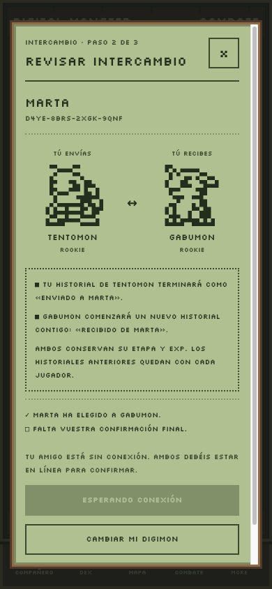
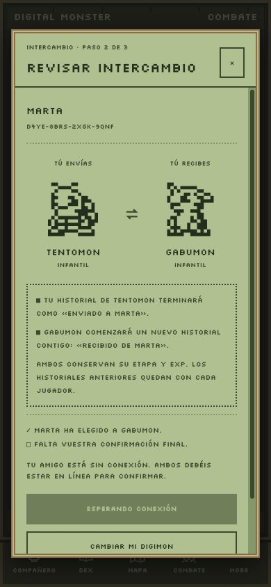
Compañero del amigo
Nombre en cabecera, miniatura grande, explicación y vuelta a Amigos.
Abrir a resolución completa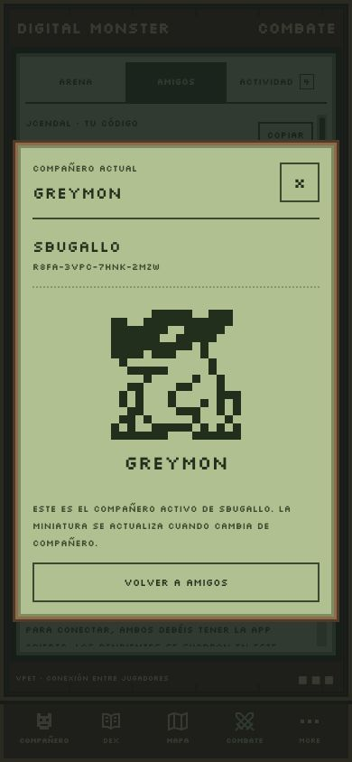
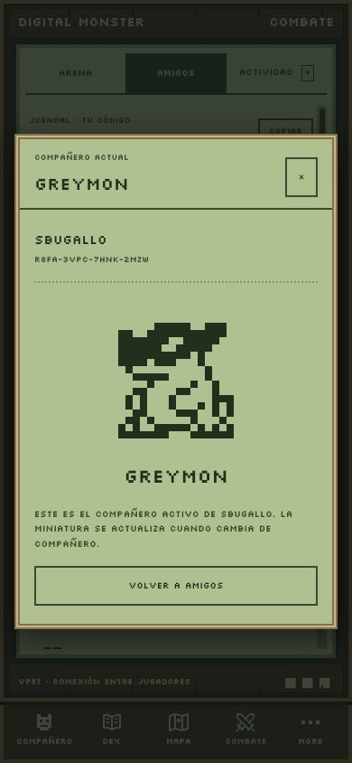
Invitación de amistad
Título personalizado y acciones verticales. El alias se verifica al conectar.
Abrir a resolución completa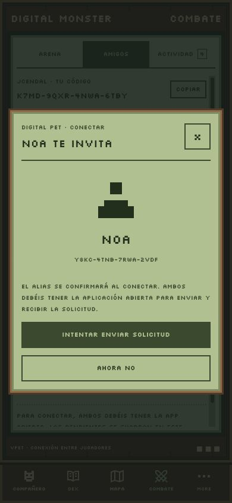
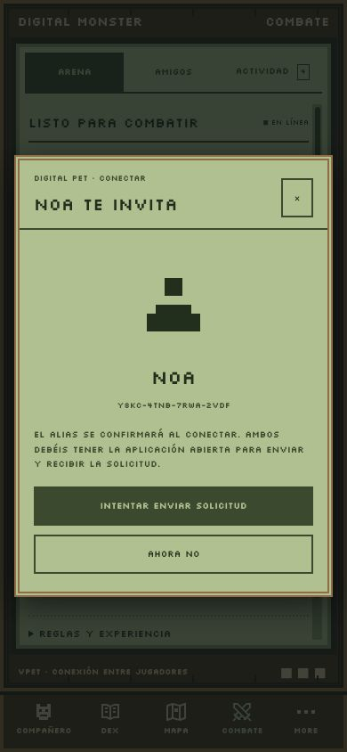
Perfil
Guardar alias centrado; miniatura del compañero activo.
Abrir a resolución completa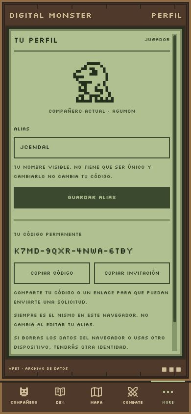
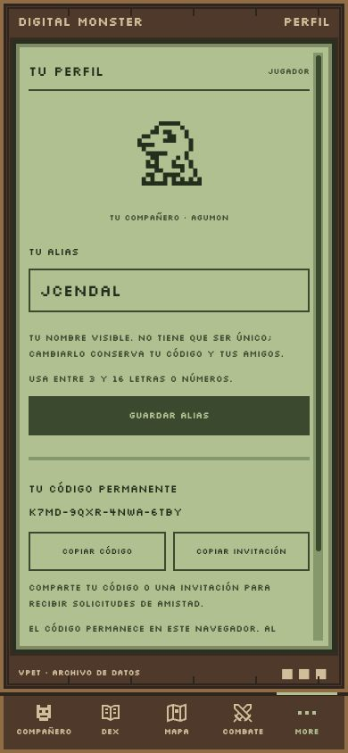
Elegir luchador de Arena
Selector independiente de Equipo. Elegir la reserva aquí mantiene el principal para cuidados y Perfil.
Abrir a resolución completa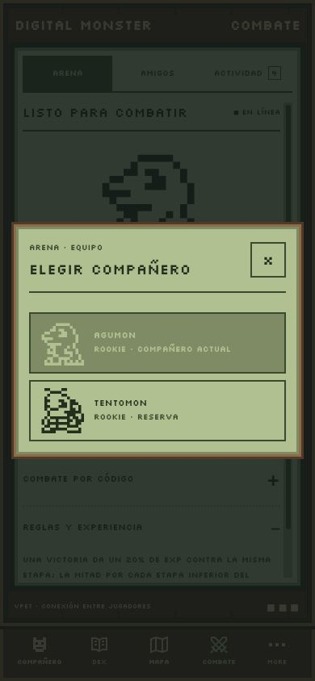
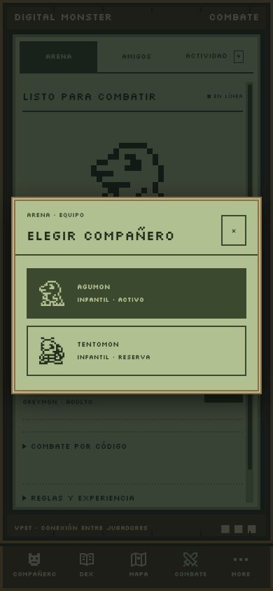